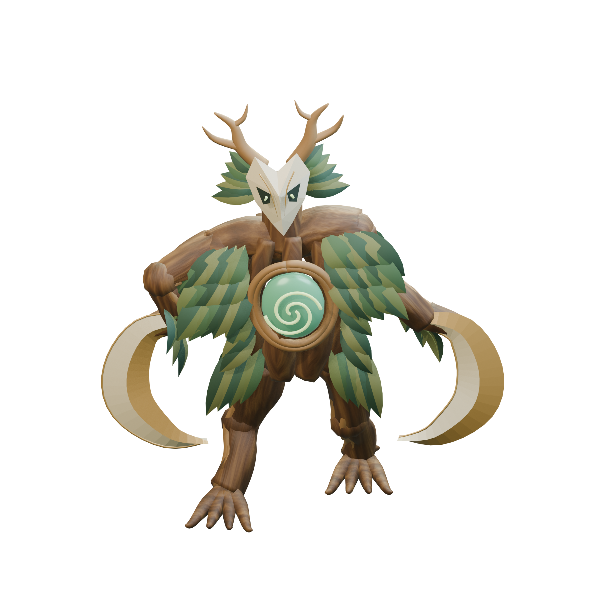

东侧巢穴 / 首轮动作打样
缚枝祭主 · 让身体带动攻击
转身迈步、腰肩发力、双镰连斩，再稳住身体露出风核。
Blender 三维制作 · 六秒样片
左右使用同一地面与相机，初始主体投影尺寸一致；两次命中仍为 2.15 秒与 3.48 秒。下载当前视频
高清造型细节


保留树身、面具、双镰与风核。当前为动作打样美术，树皮与枝叶的绘画细节仍需打磨。
本次可以检查什么
60 帧/秒正常播放 · 共 360 帧
21 根骨骼可编辑绑定与动作
- 右脚保持支撑，左脚迈步落地，身体有重心转移。
- 两次挥镰通过躯干、肩肘与镰臂连续衔接。
- 关闭攻击特效，直接检查角色动作与轮廓。
- 侧面检查脚部、手臂透视和收势；慢放保持原始帧，不使用补帧。